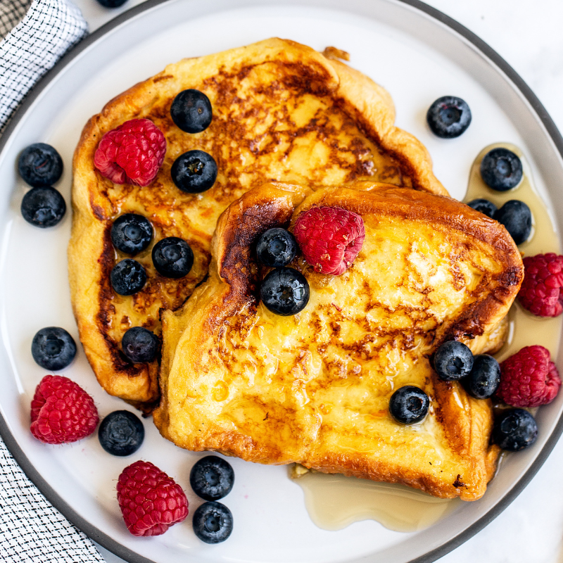

French Toast

Description
A sweet dessert often served with berries and/or maple syrup.
Ingredients
- ⅔ cup milk
- 2 large eggs
- 1 teaspoon vanilla extract
- ¼ teaspoon ground cinnamon
- salt to taste
- 6 thick slices bread
- 1 tablespoon unsalted butter, or more as needed
Steps
- Gather all ingredients
- Whisk milk, eggs, vanilla, cinnamon, and salt together in a shallow bowl
- Lightly butter a griddle or skillet and heat over medium-high heat
- Dunk bread in the egg mixture, soaking both sides
- Transfer to the hot skillet and cook until golden, 3 to 4 minutes per side
- Serve hot